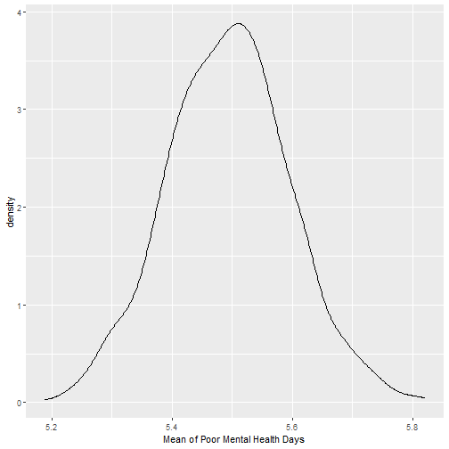
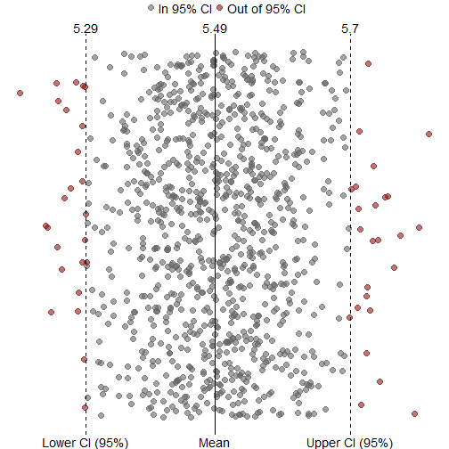
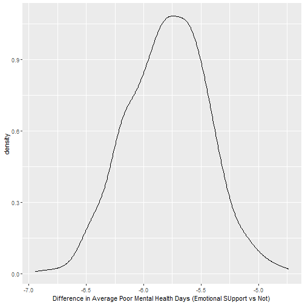

Confidence Intervals - part 2
Adam J Sullivan
Assistant Professor of Biostatistics
Brown University
Continuing Confidence Intervals
Advantages
- Very simple once you get used to it.
- Straight forward and does not require extra data.
- Works with extremely complex things where you may not understand the math enough to find a margin of error.
- Naturally checks for stability.
- Many times more accurate than a normal distribution assumption.
Disadvantages
- Works well with small data but does not have any guarantees with small data.
- Hidden assumptions:
- independence of samples.
- Population is large enough that the sample effect is not too big.
- Others depending on what statistic you are bootstrapping.
What does it do?
- Basically, bootstrapping treats the data as a population.
- The we repeatedly draw independent samples to create bootstrapped datasets.
- We sample with replacement, allowing observations to be sampled more than once.

How do we do this?
- Each bootstrap data set \[Z^{*1}, Z^{*2}, \dots, Z^{*B}\] contains n observations, sampled with replacement from the original data set.
- Each bootstrap is used to compute the estimated statistic we are interested in \(\hat\alpha^*\).
Then what?
- We can then use all the bootstrapped data sets to compute the standard error of \[\hat\alpha^{*1}, \hat\alpha^{*2}, \dots, \hat\alpha^{*B}\] desired statistic as \[ SE_B(\hat\alpha) = \sqrt{\frac{1}{B-1}\sum^B_{r=1}\bigg(\hat\alpha^{*r}-\frac{1}{B}\sum^B_{r'=1}\hat\alpha^{*r'}\bigg)^2} \tag{4} \]
- \[SE_B(\hat\alpha)\] serves as an estimate of the standard error of \[\hat\alpha\] estimated from the original data set.
Example 1: Estimating the accuracy of a single statistic
- Performing a bootstrap analysis in R entails two steps:
- Create a function that computes the statistic of interest.
- Use the
bootfunction from thebootpackage to perform the boostrapping
The Data
- This data comes from out midterm.
- We were considering whether or not the number of poor mental health days in the past 30 days was different for those apart of the transgender experience.
- We first might be interested in understanding the average number of days for both groups.
Doing this with tidyverse
- You will need the following packages:
library(rsample)
library(purrr)
library(ggplot2)
library(dplyr)
load("../Notes/Data/brfss.rda")
The Data
brfss3 <- brfss2 %>%
filter(trnsgndr_bin=="no") %>%
select(menthlth)
Generate Bootstraps
- Let's say we want to do 1000 bootstraps
bt_data <- bootstraps(brfss3, times = 1000)
bt_data
Generate Bootstraps
## # Bootstrap sampling
## # A tibble: 1,000 x 2
## splits id
## <list> <chr>
## 1 <split [6.7K/2.5K]> Bootstrap0001
## 2 <split [6.7K/2.5K]> Bootstrap0002
## 3 <split [6.7K/2.4K]> Bootstrap0003
## 4 <split [6.7K/2.5K]> Bootstrap0004
## 5 <split [6.7K/2.4K]> Bootstrap0005
## 6 <split [6.7K/2.5K]> Bootstrap0006
## 7 <split [6.7K/2.4K]> Bootstrap0007
## 8 <split [6.7K/2.5K]> Bootstrap0008
## 9 <split [6.7K/2.5K]> Bootstrap0009
## 10 <split [6.7K/2.4K]> Bootstrap0010
## # ... with 990 more rows
Structure of Bootstraps
bt_data$splits[[1]]
## <6663/2465/6663>
- 6663 values in the bootstrap.
- 2465 observations picked.
- 6663 values in original sample.
Creating our function
- We need a function to create the bootstrap over.
get_mean <- function(split) {
# access to the sample data
split_data <- analysis(split)
# calculate the sample mean value
split_mean <- mean(split_data$menthlth, na.rm=T)
return(split_mean)
}
Pass Function to Bootstraps
## # Bootstrap sampling
## # A tibble: 1,000 x 3
## splits id bt_means
## <list> <chr> <dbl>
## 1 <split [6.7K/2.5K]> Bootstrap0001 5.40
## 2 <split [6.7K/2.5K]> Bootstrap0002 5.32
## 3 <split [6.7K/2.4K]> Bootstrap0003 5.43
## 4 <split [6.7K/2.5K]> Bootstrap0004 5.48
## 5 <split [6.7K/2.4K]> Bootstrap0005 5.47
## 6 <split [6.7K/2.5K]> Bootstrap0006 5.41
## 7 <split [6.7K/2.4K]> Bootstrap0007 5.39
## 8 <split [6.7K/2.5K]> Bootstrap0008 5.68
## 9 <split [6.7K/2.5K]> Bootstrap0009 5.60
## 10 <split [6.7K/2.4K]> Bootstrap0010 5.51
## # ... with 990 more rows
What does the distribution look like?
ggplot(bt_data, aes(x = bt_means)) +
geom_line(stat = "density") +
xlab("Mean of Poor Mental Health Days")
What does the distribution look like?

Confidence Intervals
- We can get this with the following function
bt_ci <- round(quantile(bt_data$bt_means, c(0.025, 0.975)), 3)
bt_ci
## 2.5% 97.5%
## 5.291 5.698
What about traditional ways?
brfss3 %>%
summarise(mean(menthlth, na.rm=T), sd(menthlth, na.rm=T), n=n())
qt(0.975, df=6662)
5.498013 - 1.96032 * 8.639915/sqrt(6663)
5.498013 + 1.96032 * 8.639915/sqrt(6663)
## mean(menthlth, na.rm = T) sd(menthlth, na.rm = T) n
## 1 5.498013 8.639915 6663
## [1] 1.96032
## [1] 5.290521
## [1] 5.705505
What do we notice?
- Big difference in confidence intervals.
- Value of t is the same as the normal.
Graph of this

More Difficult Confidence Intervals
- Consider the difference in poor mental health among different groups.
- We can consider the difference between
emtsuprt_bin. - We may wish to know if those with emotional support have less poor mental health days than those without emotional support.
Graphing Relationship

What Can we see?
- The median appears to be higher in the group without as much emotional support.
- It can be hard to tell if there is a difference with the variation between the groups.
- We can see a relationship but are unsure if it is due to chance or not.
Hypothesis Testing
- What can be happening?
- Emotional Support influences mental health days.
- Groups differed at Baseline.
- Random Chance
Random Chance
- We can test this with the permutations as we did in lecture 13 and on the exam.
- Let's do this with a permutation test.
Proportions
brfss2 %>%
group_by(emtsuprt_bin) %>%
summarise(n=n()) %>%
mutate(freq=n/sum(n))
## # A tibble: 2 x 3
## emtsuprt_bin n freq
## <fct> <int> <dbl>
## 1 Always/Usually 5555 0.828
## 2 Sometimes-Never 1151 0.172
The Code
library(tidyverse)
brfss3 <- brfss2 %>%
select(menthlth, emtsuprt_bin) %>%
filter(!is.na(menthlth) & !is.na(emtsuprt_bin))
diff_sim <- function(data){
T=dim(data)[1]
health.sim = replicate(T, sample(c("Always/Usually", "Sometimes-Never"), size=1, prob=c(0.828, 0.172)))
health.sim = enframe(health.sim, name=NULL, value="health.sim")
data <- bind_cols(data, health.sim)
test <- data %>% group_by(health.sim) %>% summarise(m=mean(menthlth, na.rm=TRUE))
difference = test$m[1] - test$m[2]
return(difference)
}
diff = replicate(1000, diff_sim(brfss3))
The outcome

The Difference in the Data
brfss2 %>%
group_by(emtsuprt_bin) %>%
summarise(mean(menthlth, na.rm=T))
#Difference
4.52-10.3
mean(diff<=-5.78)
## # A tibble: 2 x 2
## emtsuprt_bin `mean(menthlth, na.rm = T)`
## <fct> <dbl>
## 1 Always/Usually 4.52
## 2 Sometimes-Never 10.3
## [1] -5.78
## [1] 0
What do we see?
- If we randomly assign people to emotional support or no emotional support, the average difference in poor mental health days is centered around 0 days.
- However, we saw that those with support have on average \(\approx 6\) days.
- What other ways could we consider this?
In Comes Confidence Intervals
- Let's create our confidence intervals.
brfss2 %>%
group_by(emtsuprt_bin) %>%
summarise(mean(menthlth, na.rm=T), sd(menthlth, na.rm=T))
## # A tibble: 2 x 3
## emtsuprt_bin `mean(menthlth, na.rm = T)` `sd(menthlth, na.rm = T)`
## <fct> <dbl> <dbl>
## 1 Always/Usually 4.52 7.71
## 2 Sometimes-Never 10.3 11.1
What can we do?
- Our normal way of doing this gives us 2 means and 2 standard deviations.
- We do not know how to handle this.
- We could think of the mean of the differences but we cannot find the SD of this.
- Why cant we find the SD?
Bootstrapping Saves the Day
- We can bootstrap in this instance.
- Even if we do not have a nice way to calculate the standard error, bootstrapping will work for us.
The Data
brfss4 <- brfss2 %>%
select(menthlth, emtsuprt_bin)
The bootstraps
- We will create 1000 bootstraps
set.seed(123)
bt_data2 <- bootstraps(brfss4, times = 1000)
bt_data2
The bootstraps
- We will create 1000 bootstraps
## # Bootstrap sampling
## # A tibble: 1,000 x 2
## splits id
## <list> <chr>
## 1 <split [6.7K/2.5K]> Bootstrap0001
## 2 <split [6.7K/2.5K]> Bootstrap0002
## 3 <split [6.7K/2.4K]> Bootstrap0003
## 4 <split [6.7K/2.5K]> Bootstrap0004
## 5 <split [6.7K/2.5K]> Bootstrap0005
## 6 <split [6.7K/2.5K]> Bootstrap0006
## 7 <split [6.7K/2.4K]> Bootstrap0007
## 8 <split [6.7K/2.5K]> Bootstrap0008
## 9 <split [6.7K/2.5K]> Bootstrap0009
## 10 <split [6.7K/2.4K]> Bootstrap0010
## # ... with 990 more rows
What the data is like.
analysis(bt_data2$splits[[1]]) %>% as_tibble()
What the data is like.
## # A tibble: 6,663 x 1
## menthlth
## <dbl>
## 1 1
## 2 0
## 3 0
## 4 0
## 5 7
## 6 6
## 7 1
## 8 0
## 9 0
## 10 0
## # ... with 6,653 more rows
Creating our function
get_diff <- function(splits) {
d <- analysis(splits)
mean_yes <- mean(d$menthlth[d$emtsuprt_bin=="Always/Usually"], na.rm=T)
mean_no <- mean(d$menthlth[d$emtsuprt_bin=="Sometimes-Never"], na.rm=T)
mean_yes - mean_no
}
Get Differences
bt_data2$bt_diff <- map_dbl(bt_data2$splits, get_diff)
What does the distribution look like?
ggplot(bt_data2, aes(x = bt_diff)) +
geom_line(stat = "density") +
xlab("Difference in Average Poor Mental Health Days (Emotional SUpport vs Not)")
What does the distribution look like?

Confidence Intervals
- We can get this with the following function
bt_ci <- round(quantile(bt_data2$bt_diff, c(0.025, 0.975)), 3)
bt_ci
## 2.5% 97.5%
## -6.482 -5.093
What does this mean?
- We are 95% confident that on average, those with emotional support have less poor mental health days than those without it.
- Approximately, 6.482 to 5.093 less days.
Graph of this

Hypothesis Testing
- What can be happening?
- Emotional Support influences mental health days.
- Groups differed at Baseline.
Random Chance